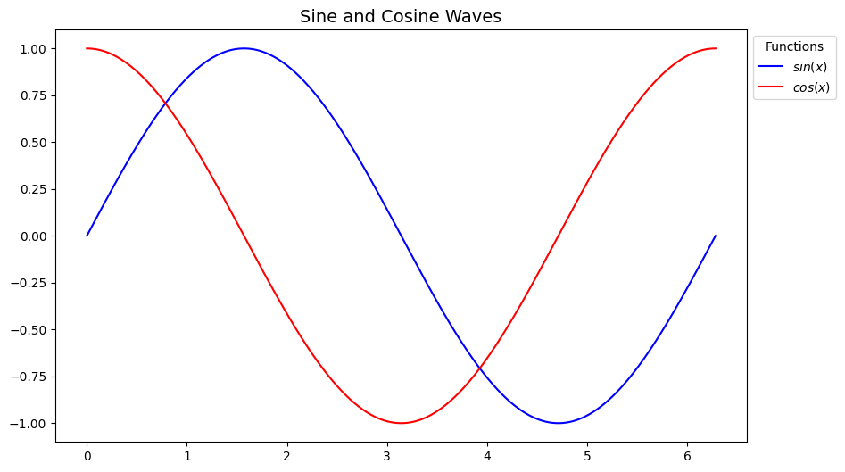
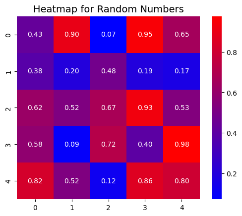

import pandas as pd
import numpy as np
import matplotlib.pyplot as plt
from matplotlib.colors import LinearSegmentedColormap
import seaborn as sns
import warnings
warnings.filterwarnings('ignore')
%config inlineBackend.figure_format = 'retina'Example of a raw file
Daddy
1. Basic Operations
Q1. Write code to create a DataFrame from a dictionary containing student names and their scores in three subjects (Math, Science, English).
* Write a code to add a new column Total Marks, which calculates the total marks for each student. * Print first five rows of the DataFrame and summary statistics using the describe() method.
data = {
'Name': ['Virat', 'Dhoni', 'Rohit', 'Sachin', 'Gavaskar'],
'Math': [90, 80, 85, 70, 95],
'Science': [85, 88, 90, 75, 92],
'English': [78, 85, 82, 90, 88]
}df_students = pd.DataFrame(data = {
'Name': ['Virat', 'Dhoni', 'Rohit', 'Sachin', 'Gavaskar'],
'Math': [90, 80, 85, 70, 95],
'Science': [85, 88, 90, 75, 92],
'English': [78, 85, 82, 90, 88]
})
df_students.eval('Total_Marks = (Math + Science + English)', inplace=True)
print(f"First five rows of the DataFrame:\n {df_students.head()}\n")
print(f"Summary statistics of :\n {df_students.describe()}")First five rows of the DataFrame:
Name Math Science English Total_Marks
0 Virat 90 85 78 253
1 Dhoni 80 88 85 253
2 Rohit 85 90 82 257
3 Sachin 70 75 90 235
4 Gavaskar 95 92 88 275
Summary statistics of :
Math Science English Total_Marks
count 5.000000 5.000000 5.000000 5.000000
mean 84.000000 86.000000 84.600000 254.600000
std 9.617692 6.670832 4.774935 14.240786
min 70.000000 75.000000 78.000000 235.000000
25% 80.000000 85.000000 82.000000 253.000000
50% 85.000000 88.000000 85.000000 253.000000
75% 90.000000 90.000000 88.000000 257.000000
max 95.000000 92.000000 90.000000 275.000000Q2 Create a dummy CSV file named students.csv containing the following columns: Name, Age, Gender, and Marks (atleast 5 entries). Perform the following tasks:
- Load the file into a DataFrame using Pandas.
- Display the last 3 rows of the DataFrame.
- Print the total number of rows and columns in the DataFrame.
# csv_df = pd.read_csv("students.csv")
# print(csv_df.tail(3),"\n")
# rows = csv_df.shape[0]
# columns = csv_df.shape[1]
# print(f"Total Rows: {rows}")
# print(f"Total Columns: {columns}")Q3.Create and populate a DataFrame with columns Employee_ID, Name, Department, and Salary. Now perform the following:
- Add a new column Bonus where each employee gets 10% of their Salary.
- Increase the Salary of all employees in the IT department by 20%.
- Drop the Department column from the DataFrame.
data = {
'Employee_ID': ['E1', 'E2', 'E3', 'E4', 'E5'],
'Name': ['Bhavya', 'Heer', 'Raj', 'Harsh', 'Aayush'],
'Department': ['HR', 'IT', 'Finance', 'IT', 'HR'],
'Salary': [50000, 60000, 55000, 58000, 52000],
}
df = pd.DataFrame(data)
df['Bonus'] = df['Salary']*0.1
df['Salary'] += df['Salary']*0.2
print(df.drop('Department', axis = 1)) Employee_ID Name Salary Bonus
0 E1 Bhavya 60000.0 5000.0
1 E2 Heer 72000.0 6000.0
2 E3 Raj 66000.0 5500.0
3 E4 Harsh 69600.0 5800.0
4 E5 Aayush 62400.0 5200.02. Indexing and Slicing
Q1. You are given a data about employees’ performance:
data = {
'Employee': ['E1', 'E2', 'E3', 'E4', 'E5'],
'Department': ['HR', 'IT', 'Finance', 'IT', 'HR'],
'Salary': [50000, 60000, 55000, 58000, 52000],
'Performance_Rating': [8.2, 7.8, 8.5, 7.4, 8.0],
'Years_at_Company': [5, 3, 6, 2, 4]
}Using boolean indexing, select employees who meet all of the following conditions:
- Belong to either ‘HR’ or ‘IT’ departments.
- Have a performance rating greater than or equal to 8.0.
- Earn a salary less than 55,000 or have been with the company for at least 4 years.
data = {
'Employee': ['E1', 'E2', 'E3', 'E4', 'E5'],
'Department': ['HR', 'IT', 'Finance', 'IT', 'HR'],
'Salary': [50000, 60000, 55000, 58000, 52000],
'Performance_Rating': [8.2, 7.8, 8.5, 7.4, 8.0],
'Years_at_Company': [5, 3, 6, 2, 4]
}
data_df = pd.DataFrame(data)
mask_1 = (data_df["Department"] == "HR") | ( data_df["Department"] == "IT")
data_df= data_df[mask_1]
mask_2 = data_df["Performance_Rating"] >= 8.0
data_df = data_df[mask_2]
mask_3 = ((data_df["Salary"]< 55000 )|( data_df["Years_at_Company"] >=4))
data_df= data_df[mask_3]
#The above can also be written in one line but it wasnt looking very readable so we didnt use that.
#mask = ((df['Department'] == 'HR') | (df['Department'] == 'IT')) & (df['Performance_Rating'] >= 8) & ((df['Salary'] < 55000) | (df['Years_at_Company'] >= 4))
print(data_df) Employee Department Salary Performance_Rating Years_at_Company
0 E1 HR 50000 8.2 5
4 E5 HR 52000 8.0 4Q2. Slicing Rows and Columns
data = {
'Product': ['Laptop', 'Phone', 'Tablet', 'Monitor', 'Headphones'],
'Price': [800, 400, 300, 150, 50],
'Stock': [20, 35, 50, 10, 100],
'Rating': [4.5, 4.2, 3.8, 4.8, 4.0]
}Use slicing to select the following:
- The last 3 rows of the DataFrame.
- All columns except ‘Stock’ and ‘Rating’ from the first 3 rows.
data = {
'Product': ['Laptop', 'Phone', 'Tablet', 'Monitor', 'Headphones'],
'Price': [800, 400, 300, 150, 50],
'Stock': [20, 35, 50, 10, 100],
'Rating': [4.5, 4.2, 3.8, 4.8, 4.0]
}
df = pd.DataFrame(data)
df = df.set_index("Product")
print(f"Last 3 rows of the dataframe:\n {df[-3:]}\n")
print(f"All columns except 'Stock' and 'Rating' from the first 3 rows:\n {df.loc[:, ~df.columns.isin(["Stock", "Rating"])].head(3)}")Last 3 rows of the dataframe:
Price Stock Rating
Product
Tablet 300 50 3.8
Monitor 150 10 4.8
Headphones 50 100 4.0
All columns except 'Stock' and 'Rating' from the first 3 rows:
Price
Product
Laptop 800
Phone 400
Tablet 300Q3.Label-based Indexing with .loc[] and .iloc[]
data = {
'Name': ['John', 'Sara', 'Tom', 'Alex', 'Julia'],
'Age': [29, 35, 40, 25, 31],
'Salary': [50000, 60000, 75000, 45000, 52000],
'Department': ['HR', 'Finance', 'IT', 'HR', 'IT']
}Using .loc[] and .iloc[], perform the following tasks:
- Select the row corresponding to ‘Tom’ using label-based indexing.
- Select the first two rows and the ‘Salary’ and ‘Department’ columns using position-based indexing.
data = {
'Name': ['John', 'Sara', 'Tom', 'Alex', 'Julia'],
'Age': [29, 35, 40, 25, 31],
'Salary': [50000, 60000, 75000, 45000, 52000],
'Department': ['HR', 'Finance', 'IT', 'HR', 'IT']
}
df = pd.DataFrame(data)
print(f"The row corresponding to 'Tom':\n {df.loc[df["Name"] == "Tom"]}\n")
print(f"The first two rows and the 'Salary' and 'Department' columns:\n {df.iloc[:2, [2, 3]]}")The row corresponding to 'Tom':
Name Age Salary Department
2 Tom 40 75000 IT
The first two rows and the 'Salary' and 'Department' columns:
Salary Department
0 50000 HR
1 60000 Finance3. GroupBy and Aggregations
Q1. You have a dataset of students’ test scores. The dataset has the following columns:
- StudentID: Unique ID of the student.
- Subject: The subject of the test.
- Score: The score obtained (out of 100).
data = pd.DataFrame({
"StudentID": [1, 2, 3, 2, 3, 1],
"Subject": ["Math", "Science", "Math", "Math","Science", "Science"],
"Score": [85, 90, 78, 88, 92, 95]
})- Write a function to calculate the average score for each student. Use this function to group the data by StudentID and find the average score.
data = pd.DataFrame({
"StudentID": [1, 2, 3, 2, 3, 1],
"Subject": ["Math", "Science", "Math", "Math","Science", "Science"],
"Score": [85, 90, 78, 88, 92, 95]
})
average_score = data.groupby("StudentID")["Score"].mean()
print(f"The average score of each student :\n{average_score}")The average score of each student :
StudentID
1 90.0
2 89.0
3 85.0
Name: Score, dtype: float64Q2. Create a dataset of retail sales with a hierarchical index consisting of Region and StoreID. The dataset contains the following columns:
ProductCategory: The category of the product sold (e.g., Electronics, Clothing)
Sales: The amount of sales made
Group the data by respective level indices and calculate:
- Total sales in each region.
- Average sales in each store .
retail_sales = pd.DataFrame({
'Region': ['North', 'North', 'North', 'South', 'South', 'South', 'East', 'East', 'West', 'West'],
'StoreID': [1, 1, 2, 3, 3, 4, 5, 5, 6, 7],
'ProductCategory': ['Electronics', 'Clothing', 'Clothing', 'Electronics', 'Clothing', 'Clothing', 'Electronics', 'Clothing', 'Electronics', 'Clothing'],
'Sales': [500, 200, 300, 700, 400, 350, 800, 450, 900, 300]
}) #
retail_sales = retail_sales.set_index(["Region", "StoreID"])
print("Retail Sales Dataset:\n", retail_sales)
total_sales = retail_sales.groupby(level = "Region")["Sales"].sum()
print("\nTotal Sales by Region:\n", total_sales)
average_sales = retail_sales.groupby(level = ["Region", "StoreID"])["Sales"].mean()
print("\nAverage Sales by Store:\n", average_sales)Retail Sales Dataset:
ProductCategory Sales
Region StoreID
North 1 Electronics 500
1 Clothing 200
2 Clothing 300
South 3 Electronics 700
3 Clothing 400
4 Clothing 350
East 5 Electronics 800
5 Clothing 450
West 6 Electronics 900
7 Clothing 300
Total Sales by Region:
Region
East 1250
North 1000
South 1450
West 1200
Name: Sales, dtype: int64
Average Sales by Store:
Region StoreID
East 5 625.0
North 1 350.0
2 300.0
South 3 550.0
4 350.0
West 6 900.0
7 300.0
Name: Sales, dtype: float64Q3. You are given a DataFrame df_orders as follows:
df_orders = pd.DataFrame({
'Category': ['Electronics', 'Electronics', 'Clothing', 'Clothing', 'Groceries', 'Groceries'],
'Order_ID': ['O1', 'O2', 'O3', 'O4', 'O5', 'O6'],
'Price': [1000, 500, 100, 200, 50, 60],
'Discount': [50, 25, 10, 20, 5, 6],
'Quantity': [1, 2, 3, 1, 4, 5]
})- Group the data by “
Category” and compute:- Total revenue
(Price * Quantity). - Total discounts given
(Discount * Quantity).
- Total revenue
- For each category find the followng:
- The order with the highest revenue.
- The average discount per order.
df_orders = pd.DataFrame({
'Category': ['Electronics', 'Electronics', 'Clothing', 'Clothing', 'Groceries', 'Groceries'],
'Order_ID': ['O1', 'O2', 'O3', 'O4', 'O5', 'O6'],
'Price': [1000, 500, 100, 200, 50, 60],
'Discount': [50, 25, 10, 20, 5, 6],
'Quantity': [1, 2, 3, 1, 4, 5]
})
df_orders["Total_Price"] = df_orders["Price"] * df_orders["Quantity"]
df_orders["Total_Discount"] = df_orders["Discount"] * df_orders["Quantity"]
grouped_df = df_orders.groupby("Category")[["Total_Price","Total_Discount"]].sum()
print(grouped_df,"\n")
max_idx = df_orders.groupby("Category")["Total_Price"].idxmax() # gives the index of the row which contains the max revenue in each category.
order_ids = df_orders.loc[max_idx, ["Category", "Order_ID"]]
order_ids = order_ids.set_index("Category")
print(f"Order ids with the highest revenue for each category: \n{order_ids}\n")
avg_discount = df_orders.groupby("Category")["Total_Discount"].mean()
print(f"The average discount per order: {avg_discount}") Total_Price Total_Discount
Category
Clothing 500 50
Electronics 2000 100
Groceries 500 50
Order ids with the highest revenue for each category:
Order_ID
Category
Clothing O3
Electronics O1
Groceries O6
The average discount per order: Category
Clothing 25.0
Electronics 50.0
Groceries 25.0
Name: Total_Discount, dtype: float644. Handling Missing Data
You are provided with a dataset, numeric_df, containing numeric features from the Titanic dataset. Your task is to explore and handle the missing data systematically.
# Load the Titanic dataset
df = sns.load_dataset('titanic')
# Select only numeric columns
numeric_df = df.select_dtypes(include = ['float64', 'int64'])
# Introducing missing values in the 'pclass' column
np.random.seed(42)
pclass_nan_indices = np.random.choice(numeric_df.index, size = int(0.05 * len(numeric_df)), replace = False)
numeric_df.loc[pclass_nan_indices, 'pclass'] = np.nan
# Introducing missing values in the 'parch' column
parch_nan_indices = np.random.choice(numeric_df.index, size = int(0.70 * len(numeric_df)), replace = False)
numeric_df.loc[parch_nan_indices, 'parch'] = np.nanQ1. Load and Inspect the Data - Run the cell below to get the dataset numeric_df. - Display the first 5 rows of the dataset. - Create a heatmap to visualize where the missing values occur. - Count the missing values in each column and report them (also, plot them). - Drop the column with more than 60 percent NaN values. Why?
print(f"The first 5 rows are : \n{numeric_df.head(5)}\n")
heat_map = sns.heatmap(numeric_df, cmap="coolwarm")
plt.show() #the missing values are the white strips
#missing values
missing = numeric_df.isnull().sum()
missing.plot(kind = "bar", xlabel = "Column Name", ylabel = "No. of Missing Values", title = "Missing Values in Each Column")
print(f"\nThe missing values per column is :\n{missing}\n")
perc_missing = missing/len(numeric_df)
dropped_df = numeric_df.loc[:,perc_missing <= 0.6]
print(f"The dataframe after dropping columns with more than 60% NaN are : \n{dropped_df}\n")
#It is a common rule in data cleaning as if we imputate columns with more 60% NaN values, then it may introduce biasness and inaccuracyThe first 5 rows are :
survived pclass age sibsp parch fare
0 0 3.0 22.0 1 0.0 7.2500
1 1 1.0 38.0 1 NaN 71.2833
2 1 3.0 26.0 0 NaN 7.9250
3 1 1.0 35.0 1 0.0 53.1000
4 0 3.0 35.0 0 0.0 8.0500
The missing values per column is :
survived 0
pclass 44
age 177
sibsp 0
parch 623
fare 0
dtype: int64
The dataframe after dropping columns with more than 60% NaN are :
survived pclass age sibsp fare
0 0 3.0 22.0 1 7.2500
1 1 1.0 38.0 1 71.2833
2 1 3.0 26.0 0 7.9250
3 1 1.0 35.0 1 53.1000
4 0 3.0 35.0 0 8.0500
.. ... ... ... ... ...
886 0 NaN 27.0 0 13.0000
887 1 1.0 19.0 0 30.0000
888 0 3.0 NaN 1 23.4500
889 1 1.0 26.0 0 30.0000
890 0 3.0 32.0 0 7.7500
[891 rows x 5 columns]
Q2 Handle Missing Values - For the pclass column, use mode imputation to fill the missing values. - Explain why mode imputation is appropriate for this column.
- How would you impute the values for the column
age. Why?
means_before = numeric_df.mean()
mode_of_pclass = numeric_df["pclass"].mode()[0]
numeric_df["pclass"] = numeric_df["pclass"].fillna(mode_of_pclass)
print(numeric_df["pclass"])
#why mode imputation is appropriate for this column? .
#The main reason to use "mode" imputation for the column pclass is as mode imputation retains the most frequent value and this reduces the distortion in our column pclass.
#3rd subquestion answered on next cell0 3.0
1 1.0
2 3.0
3 1.0
4 3.0
...
886 3.0
887 1.0
888 3.0
889 1.0
890 3.0
Name: pclass, Length: 891, dtype: float64#now first plotting a histrogram of the column age to check if the distribution is skewed or normal
plt.hist(numeric_df["age"])(array([ 54., 46., 177., 169., 118., 70., 45., 24., 9., 2.]),
array([ 0.42 , 8.378, 16.336, 24.294, 32.252, 40.21 , 48.168, 56.126,
64.084, 72.042, 80. ]),
<BarContainer object of 10 artists>)#as seen the distrubution is somewhat normal (looking like a bell curve)
#therefore using the median imputation would be ideal the column "age", as it is mostly skewed by younger age poeple.
median_of_age = numeric_df["age"].median()
numeric_df["age"] = numeric_df["age"].fillna(median_of_age)
print(f"The imputed age column :\n {numeric_df["age"]}\n")The imputed age column :
0 22.0
1 38.0
2 26.0
3 35.0
4 35.0
...
886 27.0
887 19.0
888 28.0
889 26.0
890 32.0
Name: age, Length: 891, dtype: float64
Q3 Analyze Results - Compare the dataset before and after imputation: - Count the missing values after imputation. - Calculate the mean of all numeric columns before and after imputation.
missing_val = numeric_df.isnull().sum()
print(f"Missing value: {missing_val}\n")
means_after = numeric_df.mean()
print(f"The means before imputation for all columns :\n{means_before}\n")
print(f"The means after imputation for all coumns : \n{means_after}\n")Missing value: survived 0
pclass 0
age 0
sibsp 0
parch 623
fare 0
dtype: int64
The means before imputation for all columns :
survived 0.383838
pclass 2.305785
age 29.699118
sibsp 0.523008
parch 0.399254
fare 32.204208
dtype: float64
The means after imputation for all coumns :
survived 0.383838
pclass 2.340067
age 29.361582
sibsp 0.523008
parch 0.399254
fare 32.204208
dtype: float64
5. Pandas: Merging Joining and Concatenation
Q1.You have two DataFrames df1 and df2 where df1 has a column student_id and df2 has a column student_id along with grade, how would you merge these DataFrames on student_id to keep only the rows present in both DataFrames? Show output of the merge.
data1 = {
'student_id': [1, 2, 3, 4],
'name': ['Alice', 'Bob', 'Charlie', 'David']
}
data2 = {
'student_id': [2, 3, 4, 5],
'grade': ['A', 'B', 'C', 'D']
}
df1 = pd.DataFrame(data1)
df2 = pd.DataFrame(data2)
::: {#cell-36 .cell outputId='9517ee49-2503-4a71-b5c2-0f0f62f4846f' execution_count=98}
``` {.python .cell-code}
data1 = {
'student_id': [1, 2, 3, 4],
'name': ['Alice', 'Bob', 'Charlie', 'David']
}
data2 = {
'student_id': [2, 3, 4, 5],
'grade': ['A', 'B', 'C', 'D']
}
df1 = pd.DataFrame(data1)
df2 = pd.DataFrame(data2)
pd.merge(df1, df2, how = "outer")| student_id | name | grade | |
|---|---|---|---|
| 0 | 1 | Alice | NaN |
| 1 | 2 | Bob | A |
| 2 | 3 | Charlie | B |
| 3 | 4 | David | C |
| 4 | 5 | NaN | D |
:::
Q2.If you are provided with two DataFrames, employees and departments with employee_id as the index, how would you join them such that all rows from the employees DataFrame are kept, even if there is no matching department record? (you may assume employees have 2nd column as employee_name and departments have 2nd column as department_name, and randomly assign its data)
employees_data = {
'employee_id': [1, 2, 3, 4],
'employee_name': ['Alice', 'Bob', 'Charlie', 'David']
}
departments_data = {
'employee_id': [2, 3, 4, 1],
'department_name': ['A', 'B', 'C', 'D']
}
employees = pd.DataFrame(employees_data)
departments = pd.DataFrame(departments_data)employees_data = {
'employee_id': [1, 2, 3, 4],
'employee_name': ['Alice', 'Bob', 'Charlie', 'David']
}
departments_data = {
'employee_id': [2, 3, 4, 1],
'department_name': ['A', 'B', 'C', 'D']
}
employees = pd.DataFrame(employees_data)
departments = pd.DataFrame(departments_data)
pd.merge(employees, departments, how = 'left', on = "employee_id") # how = left keeps the rows from the left dataframe and add the similar ones from the right.| employee_id | employee_name | department_name | |
|---|---|---|---|
| 0 | 1 | Alice | D |
| 1 | 2 | Bob | A |
| 2 | 3 | Charlie | B |
| 3 | 4 | David | C |
Q3. Given two DataFrames df_a and df_b with the same columns, how would you concatenate them vertically, resetting the index so it starts from zero in the combined DataFrame? (you may assume both dataframes have 2 columns each, and randomly assign its data)
df1 = {
'student_id': [1, 2, 3, 4],
'name': ['Alice', 'Bob', 'Charlie', 'David']
}
df2 = {
'student_id': [5, 6, 7, 8],
'name': ['Anish', 'Divakar', 'Vaibhav', 'Tanvi']
}
df_a = pd.DataFrame(df1)
df_b = pd.DataFrame(df2)df1 = {
'student_id': [1, 2, 3, 4],
'name': ['Alice', 'Bob', 'Charlie', 'David']
}
df2 = {
'student_id': [5, 6, 7, 8],
'name': ['Anish', 'Divakar', 'Vaibhav', 'Tanvi']
}
df_a = pd.DataFrame(df1)
df_b = pd.DataFrame(df2)
pd.concat([df_a, df_b], axis = 0, ignore_index = True)| student_id | name | |
|---|---|---|
| 0 | 1 | Alice |
| 1 | 2 | Bob |
| 2 | 3 | Charlie |
| 3 | 4 | David |
| 4 | 5 | Anish |
| 5 | 6 | Divakar |
| 6 | 7 | Vaibhav |
| 7 | 8 | Tanvi |
6. Pandas: Advanced Operations (Evaluation and Query)
You are provided with the dataset, iris, which contains information about iris flower species and their physical measurements. Your task is to use :
Q1 Pandas advanced operations such as evaluation (eval) and conditional querying (query) to analyze and extract insights from the dataset.
Q2 Load and Inspect the Data - Run iris = sns.load_dataset('iris') to load the dataset. - Display the first 5 rows of the dataset. - Print the summary statistics of the dataset.
iris = sns.load_dataset('iris')
print(f"The first 5 row are : \n{iris.head(5)}\n")
print(f"\nThe descriptiona about iris is:\n{iris.describe()}\n")The first 5 row are :
sepal_length sepal_width petal_length petal_width species
0 5.1 3.5 1.4 0.2 setosa
1 4.9 3.0 1.4 0.2 setosa
2 4.7 3.2 1.3 0.2 setosa
3 4.6 3.1 1.5 0.2 setosa
4 5.0 3.6 1.4 0.2 setosa
The descriptiona about iris is:
sepal_length sepal_width petal_length petal_width
count 150.000000 150.000000 150.000000 150.000000
mean 5.843333 3.057333 3.758000 1.199333
std 0.828066 0.435866 1.765298 0.762238
min 4.300000 2.000000 1.000000 0.100000
25% 5.100000 2.800000 1.600000 0.300000
50% 5.800000 3.000000 4.350000 1.300000
75% 6.400000 3.300000 5.100000 1.800000
max 7.900000 4.400000 6.900000 2.500000
Q3 Filter the Data Using query - Use the query method to: 1. Find all flowers with a sepal_length> 6.5 and a petal_length > 5. 2. Find all virginica flowers with a petal_width less than 2.
iris_1 = iris.query("sepal_length > 6.5" and "petal_length >5" and "petal_width < 2" and "species == 'virginica' ")
iris_1| sepal_length | sepal_width | petal_length | petal_width | species | |
|---|---|---|---|---|---|
| 100 | 6.3 | 3.3 | 6.0 | 2.5 | virginica |
| 101 | 5.8 | 2.7 | 5.1 | 1.9 | virginica |
| 102 | 7.1 | 3.0 | 5.9 | 2.1 | virginica |
| 103 | 6.3 | 2.9 | 5.6 | 1.8 | virginica |
| 104 | 6.5 | 3.0 | 5.8 | 2.2 | virginica |
| 105 | 7.6 | 3.0 | 6.6 | 2.1 | virginica |
| 106 | 4.9 | 2.5 | 4.5 | 1.7 | virginica |
| 107 | 7.3 | 2.9 | 6.3 | 1.8 | virginica |
| 108 | 6.7 | 2.5 | 5.8 | 1.8 | virginica |
| 109 | 7.2 | 3.6 | 6.1 | 2.5 | virginica |
| 110 | 6.5 | 3.2 | 5.1 | 2.0 | virginica |
| 111 | 6.4 | 2.7 | 5.3 | 1.9 | virginica |
| 112 | 6.8 | 3.0 | 5.5 | 2.1 | virginica |
| 113 | 5.7 | 2.5 | 5.0 | 2.0 | virginica |
| 114 | 5.8 | 2.8 | 5.1 | 2.4 | virginica |
| 115 | 6.4 | 3.2 | 5.3 | 2.3 | virginica |
| 116 | 6.5 | 3.0 | 5.5 | 1.8 | virginica |
| 117 | 7.7 | 3.8 | 6.7 | 2.2 | virginica |
| 118 | 7.7 | 2.6 | 6.9 | 2.3 | virginica |
| 119 | 6.0 | 2.2 | 5.0 | 1.5 | virginica |
| 120 | 6.9 | 3.2 | 5.7 | 2.3 | virginica |
| 121 | 5.6 | 2.8 | 4.9 | 2.0 | virginica |
| 122 | 7.7 | 2.8 | 6.7 | 2.0 | virginica |
| 123 | 6.3 | 2.7 | 4.9 | 1.8 | virginica |
| 124 | 6.7 | 3.3 | 5.7 | 2.1 | virginica |
| 125 | 7.2 | 3.2 | 6.0 | 1.8 | virginica |
| 126 | 6.2 | 2.8 | 4.8 | 1.8 | virginica |
| 127 | 6.1 | 3.0 | 4.9 | 1.8 | virginica |
| 128 | 6.4 | 2.8 | 5.6 | 2.1 | virginica |
| 129 | 7.2 | 3.0 | 5.8 | 1.6 | virginica |
| 130 | 7.4 | 2.8 | 6.1 | 1.9 | virginica |
| 131 | 7.9 | 3.8 | 6.4 | 2.0 | virginica |
| 132 | 6.4 | 2.8 | 5.6 | 2.2 | virginica |
| 133 | 6.3 | 2.8 | 5.1 | 1.5 | virginica |
| 134 | 6.1 | 2.6 | 5.6 | 1.4 | virginica |
| 135 | 7.7 | 3.0 | 6.1 | 2.3 | virginica |
| 136 | 6.3 | 3.4 | 5.6 | 2.4 | virginica |
| 137 | 6.4 | 3.1 | 5.5 | 1.8 | virginica |
| 138 | 6.0 | 3.0 | 4.8 | 1.8 | virginica |
| 139 | 6.9 | 3.1 | 5.4 | 2.1 | virginica |
| 140 | 6.7 | 3.1 | 5.6 | 2.4 | virginica |
| 141 | 6.9 | 3.1 | 5.1 | 2.3 | virginica |
| 142 | 5.8 | 2.7 | 5.1 | 1.9 | virginica |
| 143 | 6.8 | 3.2 | 5.9 | 2.3 | virginica |
| 144 | 6.7 | 3.3 | 5.7 | 2.5 | virginica |
| 145 | 6.7 | 3.0 | 5.2 | 2.3 | virginica |
| 146 | 6.3 | 2.5 | 5.0 | 1.9 | virginica |
| 147 | 6.5 | 3.0 | 5.2 | 2.0 | virginica |
| 148 | 6.2 | 3.4 | 5.4 | 2.3 | virginica |
| 149 | 5.9 | 3.0 | 5.1 | 1.8 | virginica |
Q4 Use eval for Calculations - Create a new column petal_area using the formula:
petal_area = petal_length * petal_width - Display the top 5 flowers with the largest petal_area. - Use query to filter flowers that meet the following conditions: - petal_area > 10 - sepal_length is in the range 5 to 7.
iris.eval('petal_area = (petal_length*petal_width)', inplace = True)
top_5_flowers = iris.sort_values(by = 'petal_area', ascending=False).head(5)
top_5_flowers
#next sub-question done in next cell as "top_5_flowers" werent being displayed properly using print| sepal_length | sepal_width | petal_length | petal_width | species | petal_area | |
|---|---|---|---|---|---|---|
| 118 | 7.7 | 2.6 | 6.9 | 2.3 | virginica | 15.87 |
| 109 | 7.2 | 3.6 | 6.1 | 2.5 | virginica | 15.25 |
| 100 | 6.3 | 3.3 | 6.0 | 2.5 | virginica | 15.00 |
| 117 | 7.7 | 3.8 | 6.7 | 2.2 | virginica | 14.74 |
| 144 | 6.7 | 3.3 | 5.7 | 2.5 | virginica | 14.25 |
filtered_iris = iris.query("petal_area > 10" and " 5 <= sepal_length <= 7")
filtered_iris| sepal_length | sepal_width | petal_length | petal_width | species | petal_area | |
|---|---|---|---|---|---|---|
| 0 | 5.1 | 3.5 | 1.4 | 0.2 | setosa | 0.28 |
| 4 | 5.0 | 3.6 | 1.4 | 0.2 | setosa | 0.28 |
| 5 | 5.4 | 3.9 | 1.7 | 0.4 | setosa | 0.68 |
| 7 | 5.0 | 3.4 | 1.5 | 0.2 | setosa | 0.30 |
| 10 | 5.4 | 3.7 | 1.5 | 0.2 | setosa | 0.30 |
| ... | ... | ... | ... | ... | ... | ... |
| 145 | 6.7 | 3.0 | 5.2 | 2.3 | virginica | 11.96 |
| 146 | 6.3 | 2.5 | 5.0 | 1.9 | virginica | 9.50 |
| 147 | 6.5 | 3.0 | 5.2 | 2.0 | virginica | 10.40 |
| 148 | 6.2 | 3.4 | 5.4 | 2.3 | virginica | 12.42 |
| 149 | 5.9 | 3.0 | 5.1 | 1.8 | virginica | 9.18 |
116 rows × 6 columns
Q5 Analyze and Visualize - Perform a group-wise analysis: 1. Calculate the average petal length for each species. 2. Find the count of flowers for each species. 3. Create a scatter plot of sepal_length vs. petal_length, colored by species.
average_petal_length = iris.groupby("species")["petal_length"].mean()
count_flowers = iris.groupby("species").size()
print(f"The average petal length for each species: \n{average_petal_length}\n")
print(f"The count of each flower: \n{count_flowers}\n")
#scatterplot
sns.scatterplot(x = iris['sepal_length'], y = iris['petal_length'], hue = iris["species"]) #used seaborn as matplotlib doesnt have hue argument
plt.xlabel('Sepal Length')
plt.ylabel('Petal Length')
plt.title('Sepal Length vs. Petal Length')
plt.legend()
plt.grid(True)
plt.show()The average petal length for each species:
species
setosa 1.462
versicolor 4.260
virginica 5.552
Name: petal_length, dtype: float64
The count of each flower:
species
setosa 50
versicolor 50
virginica 50
dtype: int64
7. Matplotlib: Basic Plotting Questions
Q1. Line Plot
Plot a sine wave ((y = sin(x))) for (x in [0, 2π]). Customize the plot by: 1. Adding a title to the graph. 2. Adding labels for the x-axis and y-axis. 3. Displaying a grid.
fig, ax = plt.subplots()
angles = np.linspace(0, 2*np.pi, 10000)
sin_fn = np.sin(angles)
ax.plot(angles, sin_fn, color = 'r')
ax.set_title("Sine Wave", fontsize = 14)
ax.set_xlabel("Angles")
ax.set_ylabel("Sine values")
ax.grid(True)
Q2. Multiple Line Plots
Plot the following functions on the same graph for (x ): 1. (y_1 = sin(x)) 2. (y_2 = cos(x))
Customize the graph by: - Using different colors and line styles for each function. - Adding a legend to identify the curves.
fig, ax = plt.subplots()
angles = np.linspace(0, 2*np.pi, 10000)
sin_fn = np.sin(angles)
cos_fn = np.cos(angles)
ax.plot(angles, sin_fn, label = "$sin(x)$", linestyle = "-", color = 'b')
ax.plot(angles, cos_fn, label = "$cos(x)$", linestyle = "--", color = 'r')
ax.set_title("Sine and Cosine Waves", fontsize = 14)
ax.set_xlabel("Angles")
ax.set_ylabel("Sine and cosine values")
ax.legend(bbox_to_anchor = (1, 1), title = "Functions") # bbox_to_anchor = (1, 1) to display legend outside the plot.
ax.grid(True)Q3. Plot Customization
Plot the function (y = x^2) for (x ).
Customize the plot by: 1. Adding a title and axis labels. 2. Changing the line style, color, and thickness. 3. Adjusting the axis limits to make the graph more visually appealing.
fig, ax = plt.subplots()
x = np.linspace(-100, 100, 1000)
y = x**2
ax.plot(x, y, linestyle = "-.", linewidth = 4, color = 'r')
ax.set_title("Plot of $y = x^2$", fontsize = 14)
ax.set_xlabel('$x$')
ax.set_ylabel('$y^2$')
ax.set_xlim(-10, 10)
ax.set_ylim(-5, 110)
plt.show()8a. Bar Plot
Q1 You are provided with the tips dataset. Your task is to create a bar plot** using Matplotlib.**
Load the
tipsdataset using Seaborn:import seaborn as sns tips = sns.load_dataset('tips')Create a bar plot showing the average tip for each day of the week. Label the x-axis as Day, the y-axis as Average Tip, and add a title: “Average Tip by Day”.
Based on the bar plot, which day has the highest average tip?
tips = sns.load_dataset('tips')
average_tips = tips.groupby("day").tip.mean()
bars = average_tips.plot(kind='bar', color='skyblue', edgecolor = 'k', figsize=(8, 6), xlabel='Day', ylabel='Average tips', title='Average Tips on Each Day')
print(f"The day which ahs the highest average tip is: {average_tips.idxmax()}\n")The day which ahs the highest average tip is: Sun
Based on the bar-plot above the Sunday has the highest average tip
8b. Scatter Plot
Q1. You are provided with the tips dataset. Your task is to create a scatter plot using Matplotlib.
Load the
tipsdataset using Seaborn:import seaborn as sns tips = sns.load_dataset('tips')Create a scatter plot with total_bill on the x-axis and tip on the y-axis.
Label the x-axis as Total Bill, the y-axis as Tip, and add a title: “Relationship between Total Bill and Tip”.
Based on the scatter plot, do you observe any relationship between total_bill and tip?
tips = sns.load_dataset('tips')
fig, ax = plt.subplots()
tips.plot.scatter(x='total_bill', y='tip', c='size',colormap = 'viridis', s = tips['size']*10, ax = ax, xlabel = "Total bill", ylabel = "Tip",title = "Relationship between Total Bill and Tip")
plt.show()
There appears to be a positive relationship between total_bill and tip. As the total bill increases, the tip generally tends to increase as well. However, the relationship does not appear to be perfectly linear, and there is some variability in the amount of tip given for a given total bill
9. Matplotlib: Subplots and Layouts
Q1. Create a 2x2 grid of subplots with: - Subplot (1,1): Plot y = sin(x). - Subplot (1,2): Plot y = cos(x) . - Subplot (2,1): Plot y = e−x - Subplot (2,2): Plot y=ln(x) for x∈[0.1,2].
Customize background colors, add unique x and y labels, and set titles.
fig, ax = plt.subplots(2, 2, figsize = (10, 6))
x_1 = np.linspace(0, 2*np.pi, 10000)
y_1 = np.sin(x_1)
x_2 = np.linspace(0.1, 2, 10000)
y_2 = np.cos(x_1)
y_3 = np.exp(-(x_1))
y_4 = np.log(x_2)
ax[0, 0].plot(x_1, y_1, color = 'C0')
ax[0, 0].set_title("$sin(x)$", fontsize = 14)
ax[0, 0].set_xlabel("$x$")
ax[0, 0].set_ylabel("$sin(x)$")
ax[0, 0].set_facecolor('lightyellow')
ax[0, 1].plot(x_1, y_2, color = 'C1')
ax[0, 1].set_title("$cos(x)$", fontsize = 14)
ax[0, 1].set_xlabel("$x$")
ax[0, 1].set_ylabel("$cos(x)$")
ax[0, 1].set_facecolor('lightblue')
ax[1, 0].plot(x_1, y_3, color = 'C2')
ax[1, 0].set_title("$e^{-x}$", fontsize = 14)
ax[1, 0].set_xlabel("$x$")
ax[1, 0].set_ylabel("$e^{-x}$")
ax[1, 0].set_facecolor('orange')
ax[1, 1].plot(x_2, y_4, color = 'C3')
ax[1, 1].set_title("$log(x)$", fontsize = 14)
ax[1, 1].set_xlabel("$x$")
ax[1, 1].set_ylabel("$log(x)$")
ax[1, 1].set_facecolor('lightgreen')
fig.tight_layout()Q2. Create a subplot within another subplot: - Main subplot: Display a scatter plot of 100 random points with x and y values between 0 and 1. - Inset subplot: Display a histogram of the x-values from the scatter plot.
fig, main_ax = plt.subplots()
arr_x = np.random.rand(100)
arr_y = np.random.rand(100)
colors = arr_x
main_ax.scatter(arr_x, arr_y, c = colors, cmap = "viridis")
main_ax.set_title("Scatter Plot of Random Numbers", fontsize = 14)
inset_ax = fig.add_axes([0.6, 0.6, 0.25, 0.25])
inset_ax.hist(arr_x, bins = 50, color = 'r', edgecolor = 'k')
inset_ax.set_title("Histogram of X Values")
fig.tight_layout()Q3. Create a Layout with One Large and Two Smaller Subplots
Design a large subplot occupying the top two-thirds of the figure and plot ( y = sin(x) ) and ( y = cos(x) ) on the same graph.
Create two smaller subplots in the bottom row:
- On the left, plot y =x2.
- On the right, plot y = ex.
- On the left, plot y =x2.
Ensure each subplot has appropriate titles, axis labels, and legends where necessary. Use a clean layout that avoids overlapping elements.
fig_1, ax = plt.subplots(figsize = (10, 6))
angles = np.linspace(0, 2*np.pi, 10000)
sin_fn = np.sin(angles)
cos_fn = np.cos(angles)
ax.plot(angles, sin_fn, label = "$sin(x)$", color = 'b')
ax.plot(angles, cos_fn, label = "$cos(x)$", color = 'r')
ax.set_title("Sine and Cosine Waves", fontsize = 14)
ax.legend(bbox_to_anchor = (1, 1), title = "Functions")
fig, ax_2 = plt.subplots(1, 2, figsize = (10, 6))
x = np.linspace(-10, 10, 10000)
y_1 = x**2
y_2 = np.exp(x)
ax_2[0].plot(x, y_1, color = 'k')
ax_2[0].set_title("$y=x^2$", fontsize = 14)
ax_2[0].set_xlabel("$x$")
ax_2[0].set_ylabel("$x^2$")
ax_2[1].plot(x, y_2, color = 'C0')
ax_2[1].set_title("$y=e^x$", fontsize = 14)
ax_2[1].set_xlabel("$x$")
ax_2[1].set_ylabel("$e^x$")
plt.tight_layout()10. Matplotlib: Advanced Customization
Q1. Customizing Axes and Ticks
Create a line plot for y = x^2 in the range -10 to 10. Customize the axes and ticks: 1. Set x-axis range to -10 to 10. 2. Set y-axis range to 0 to 100. 3. Use custom tick marks at intervals of 2 for x-axis and 10 for y-axis. 4. Rotate x-axis tick labels by 45 degrees.
fig, ax = plt.subplots()
x = np.linspace(-10, 10, 100)
y = x**2
ax.plot(x, y, linewidth = 2, color = 'r')
ax.set_title("Plot of $y = x^2$", fontsize = 14)
ax.set_xlim(-10, 10)
ax.set_ylim(0, 100)
ax.set_xticks(np.arange(-10, 10, 2))
ax.set_yticks(np.arange(0, 100, 10))
ax.tick_params(axis = 'x', rotation = 45)
ax.set_xlabel('$x$')
ax.set_ylabel('$y^2$')
plt.show()
Q2. Multiple Subplots with Shared Legend and Grid Customization
Create a figure with four subplots (2x2 grid) showing different trigonometric functions: 1. Top-left: y = sin(x) 2. Top-right: y = cos(x) 3. Bottom-left: y = tan(x) (restrict x to avoid undefined regions). 4. Bottom-right: y = sin^2(x) + cos^2(x) (should always equal 1).
fig, ax = plt.subplots(2, 2, figsize = (10, 6))
x_1 = np.linspace(-2*np.pi, 2*np.pi, 10000)
y_1 = np.sin(x_1)
y_2 = np.cos(x_1)
y_3 = np.tan(x_1)
y_4 = (np.sin(x_1))**2 + (np.cos(x_1))**2
ax[0, 0].plot(x_1, y_1, color = 'C0')
ax[0, 0].set_title("$sin(x)$", fontsize = 14)
ax[0, 0].set_xlabel("$x$")
ax[0, 0].set_ylabel("$sin(x)$")
ax[0, 1].plot(x_1, y_2, color = 'C1')
ax[0, 1].set_title("$cos(x)$", fontsize = 14)
ax[0, 1].set_xlabel("$x$")
ax[0, 1].set_ylabel("$cos(x)$")
ax[1, 0].set_ylim(-20, 20)
ax[1, 0].plot(x_1, y_3, color = 'C2')
ax[1, 0].set_title("$tan(x)$", fontsize = 14)
ax[1, 0].set_xlabel("$x$")
ax[1, 0].set_ylabel("$tan(x)$")
ax[1,0].set_xlim(-np.pi/2,np.pi/2) #bound from -pi/2 to pi/2 to avoid the discontinuity
ax[1, 1].plot(x_1, y_4, color = 'C3')
ax[1, 1].set_title("${sin(x)}^2 + {cos(x)}^2$", fontsize = 14)
ax[1, 1].set_xlabel("$x$")
ax[1, 1].set_ylabel("${sin(x)}^2 + {cos(x)}^2$")
fig.tight_layout()Q3. Subplots and Shared Axes
Create two subplots side-by-side: 1. Bar chart for sales (random data) from January to June. 2. Line chart for cumulative sales. Share the y-axis and add titles, a common x-axis label, and a grid for the second plot.
# #using example csv file named sales_data.csv
# sales_df = pd.read_csv ("sales_data.csv")
# cum_sales = np.cumsum(sales_df["Sales"])
# fig,ax = plt.subplots(1,2,sharey = True)
# ax[0].bar(sales_df["Month"],sales_df["Sales"])
# ax[0].set_xticklabels(sales_df["Month"],rotation = -45)
# ax[0].grid(True)
# ax[0].set_ylabel("SALES")
# ax[1].plot(sales_df["Month"],cum_sales)
# ax[1].set_xticklabels(sales_df["Month"],rotation = -45)
# ax[1].grid(True)
# fig.supxlabel("MONTHS")
# fig.tight_layout()Q4. Adding Annotations
Create a scatter plot of 10 random points: 1. Annotate the point with the max y-coordinate with a red star and text label. 2. Customize marker size and color for all points.
fig, ax = plt.subplots()
x = np.random.rand(10)
y = np.random.rand(10)
ax.scatter(x, y, color = 'b', marker = 'o')
max_y_ind = np.argmax(y)
max_y_coordinate = y[max_y_ind]
max_x_coordinate = x[max_y_ind]
ax.scatter(max_x_coordinate, max_y_coordinate, color = 'r', marker = '*', s = 200)
ax.text(max_x_coordinate, max_y_coordinate, f"({max_x_coordinate:.2f}, {max_y_coordinate:.2f})", fontsize=10, color='red', ha='left', va='bottom')
plt.show()
Q5. Creating a Custom Colormap
Generate a heatmap for a 5x5 matrix of random numbers between 0 and 1: 1. Use a custom colormap (blue to red). 2. Add a color bar and display exact cell values rounded to 2 decimals.
matrix = np.random.rand(5, 5)
fig, ax = plt.subplots()
customized_cmap = LinearSegmentedColormap.from_list("blue_rea", ["blue", "red"])
sns.heatmap(matrix, cmap = customized_cmap, annot = True, fmt = '.2f', square = True)
ax.set_title("Heatmap for Random Numbers", fontsize = 14)
plt.show()
# im = ax.imshow(matrix, cmap = customized_cmap)
# fig.colorbar(im, ax = ax)
# for i in range(5):
# for j in range(5):
# ax.text(j, i, f'{matrix[i, j]:.2f}', ha='center', va='center', color='black', fontsize=10)Q6. Customization of 3D Plot
Using Matplotlib’s mpl_toolkits.mplot3d, create a 3D surface plot for the function: z = sin(sqrt(x^2 + y^2))
Requirements: 1. Generate x and y values in the range -5 to 5 using a meshgrid. 2. Use a custom colormap that highlights peaks and valleys (e.g., coolwarm). 3. Add a color bar with a label “Amplitude”. 4. Add labels for all three axes and a title. 5. Rotate the 3D plot to a custom viewing angle using ax.view_init.
fig, ax = plt.subplots(subplot_kw = {"projection": "3d"})
x = np.linspace(-5, 6)
y = np.linspace(-5, 6)
X, Y = np.meshgrid(x,y)
Z = np.sin((X**2 + Y**2)**(1/2))
surface = ax.plot_surface(X, Y, Z, cmap = 'coolwarm')
ax.set_title('3D Plot', fontsize=14)
ax.set_xlabel('X-axis')
ax.set_ylabel('Y-axis')
ax.set_zlabel('Z-axis')
ax.view_init(azim = 15)
fig.colorbar(surface, label = "Amplitude", pad = 0.2)
plt.show()
EXTRA QUESTIONS
Definition of a Partition
A collection of sets \({A_1, , A_n}\) is a partition of the universal set \(\) if it satisfies the following conditions:
- Non-overlap: \({A_1, , A_n}\) is disjoint.
- Decompose: \(A_1 A_2 A_n = \).
Important Laws
Distributive (How to mix union and intersection)
\[ A \cap (B \cup C) = (A \cap B) \cup (A \cap C) \]
\[ A \cup (B \cap C) = (A \cup B) \cap (A \cup C) \]
De Morgan’s Law (How to complement over intersection and union)
\[ (A \cap B)^c = A^c \cup B^c \]
\[ (A \cup B)^c = A^c \cap B^c \]
Question 1: Function to Check Partition
Write a Python function to check if a given list of sets is a partition of a universal set. The function should take the universal set and the list of sets as arguments and verify the following conditions: 1. The union of all subsets in the list equals the universal set. 2. The subsets are pairwise disjoint.
Write your function and test it with an example.
def is_partition(sets, universal_set) :
union_of_sets = set().union(*sets) #Union of all sets in the list
if union_of_sets != universal_set: #This will check the first required condition
return False
for i in range(len(sets)):
for j in range(len(sets)):
if len(np.intersect1d(sets[i], sets[j])) != 0 and i != j: #This will check the second condition and will return false as soon as any pair of sets are disjoint
return False
return True #If both the conditions are true then in the end the function will return true
#testing the function with examples
# Example 1
universal_set = {1, 2, 3, 4}
sets_1 = [{1, 2}, {3}, {4}]
print(is_partition(sets_1, universal_set))
# Example 2: sets are not disjoint
sets_2 = [{1, 2}, {2, 3}, {4}, {2, 1}]
print(is_partition(sets_2, universal_set))
# Example 3:union is not universal set
sets_3 = [{1, 2}, {5, 6}, {7}]
print(is_partition(sets_3, universal_set)) True
False
FalseQuestion 2: Laws
With an example numpy array corresponding to set A, B, C, show the distributive properties and De Morgan’s Laws.
Also, use venn3 from matplotlib_venn library for vizualization.
# from matplotlib_venn import venn3
# A = np.array([1, 3, 2, 10, 6, 9])
# B = np.array([5, 3, 17, 10, 8, 9])
# C = np.array([4, 72, 23, 10, 34, 7])
# universal_set = np.union1d(A, np.union1d(B, C))
# A_intrsct_B = np.intersect1d(A, B)
# A_intrsct_C = np.intersect1d(A, C)
# B_intrsct_C = np.intersect1d(C, B)
# A_uni_B = np.union1d(A,B)
# C_uni_B = np.union1d(C,B)
# C_uni_A = np.union1d(C,A)
# A_intrsct_B_uni_C = np.intersect1d(A, C_uni_B)
# A_uni_B_intrsct_C = np.union1d(A, B_intrsct_C)
# def negation(set_a):
# neg_set_a = universal_set[~np.isin(universal_set, set_a)]
# return neg_set_a # ~np.isin(universal_set, set_a) returns a boolean mask. The value is true for the elements which are in U-set_a.
# def check_distributive(A, B, C):
# # here we can't directly compare two arrays with ==. As it operates element wise and return a array of boolean values
# if np.array_equal(A_intrsct_B_uni_C, np.union1d(A_intrsct_B, A_intrsct_C)) and np.array_equal(A_uni_B_intrsct_C, np.intersect1d(A_uni_B, C_uni_A)):
# return True
# return False
# def check_morgan_law(A, B, C):
# if np.array_equal(negation(A_intrsct_B), np.union1d(negation(A), negation(B))) and np.array_equal(negation(A_uni_B), np.intersect1d(negation(A), negation(B))):
# return True
# return False
# print(f"Checking if the distributive properties are true : {check_distributive(A, B, C)}\n")
# print(f"Checking if the morgan law is true : {check_morgan_law(A, B, C)}\n")
# venn = venn3(subsets = (A, B, C), set_labels=('Set A', 'Set B', 'Set C'))
# venn.get_label_by_id('100').set_text('Only A') # Label for Set A only
# venn.get_label_by_id('010').set_text('Only B') # Label for Set B only
# venn.get_label_by_id('001').set_text('Only C') # Label for Set C only
# venn.get_label_by_id('110').set_text('$A \cap B$')
# venn.get_label_by_id('011').set_text('$B \cap C$') #using latex
# venn.get_label_by_id('101').set_text('$A \cap C$')
# venn.get_label_by_id('111').set_text('$A \cap B \cap C$')
# plt.show()Question 3: Union and Intersection of Students
For below code: 1. The union of all sets of students present across the three subjects. 2. The intersection of all sets of students present across the three subjects.
import pandas as pd
# Dictionary of marks
marks = {
"Math": {"Alice": 85, "Bob": 90, "Charlie": 78},
"Physics": {"Bob": 88, "Charlie": 92, "David": 75},
"Chemistry": {"Alice": 82, "Charlie": 80, "Eve": 91},
}
# Convert the dictionary to a DataFrame
df = pd.DataFrame(marks).Timport pandas as pd
# Dictionary of marks
marks = {
"Math": {"Alice": 85, "Bob": 90, "Charlie": 78},
"Physics": {"Bob": 88, "Charlie": 92, "David": 75},
"Chemistry": {"Alice": 82, "Charlie": 80, "Eve": 91},
}
# Convert the dictionary to a DataFrame
df = pd.DataFrame(marks) .T
union_of_students = set(df.columns)
print(f"The union of all sets of students present across the three subjects is: {union_of_students}\n")
intersection_of_student = set(df.dropna(axis=1))
print(f"The intersection of all sets of students present across the three subjects is: {intersection_of_student}\n")The union of all sets of students present across the three subjects is: {'David', 'Bob', 'Charlie', 'Eve', 'Alice'}
The intersection of all sets of students present across the three subjects is: {'Charlie'}
Question 4
Implement a Python function to compute the cartesian product of two sets A and B without using Python’s built-in functions or libraries like itertools. The function should return the cartesian product as a set of ordered pairs (tuples).
def cartesian_product(a_set, b_set):
answer = set()
for element_a in a_set:
for element_b in b_set:
answer.add((element_a, element_b))
return answer
#testing the function with examples
A = {1, 2, 3}
B = {3, 4}
print(cartesian_product(A, B),"\n")
A = {'a', 'b'}
B = {1, 2}
print(cartesian_product(A, B),"\n")
A = {}
B = {10, 20, 30}
print(cartesian_product(A, B)) #this should print a null set {(2, 4), (3, 4), (1, 4), (2, 3), (3, 3), (1, 3)}
{('b', 2), ('b', 1), ('a', 1), ('a', 2)}
set()